掉落明细与掉落率
多娜多娜的掉落分两类：武器（按 2～6 级在地图上固定刷新）与道具（回复类、 据点增益类、战斗辅助类、春销类）。本页上半是按武器等级整理的速查表， 下半是各区域的逐点掉落表原图。
读表要点
- 武器等级与章节挂钩：2～3 级在前中期地图，4～5 级在中后期，6 级只在 URN（二周目地图）掉落。
- 上表的概率有两列口径：多数点位是
25%，少数是40%/12.50%/50%—— 表示该点位所在格子抽出这一项的概率，同一格子的其余项按剩余概率分配。 - 上表与原帖的「逐图掉落表」有 3 处不一致（已在「备注」列标出）： 产峰工业的「撤出区域 / 产品仓库」两个点位的概率在原帖里被写反了， 化学研究所「生物安全柜」的 2 级武器概率也不一致。本站以逐图表原图为准， 上表照录原帖速查表原样，两处并列便于对照。
- 原帖另有一句提示：造船所「酬宾室」的 5 级武器概率较高，但需要炸药开门； 相应地，「离线门」需要炸药——后期商店会刷炸药，一颗炸药可炸开离线门一次。
- 下表的图是原帖截图按区域切出的原表（3 倍放大，未改动任何数值）。 表中「概率」列留空表示该行与原表一致继承上一行，本站未作补全。
| 等级 | 区域 | 地点 | 概率 | 备注 |
|---|---|---|---|---|
| 2级 | ASP | 服务器室 | 25.00% | |
| 2级 | 产峰工业 | 撤出区域 | 25.00% | 逐图表作 40% |
| 2级 | 产峰工业 | 产品仓库 | 40.00% | 逐图表作 25% |
| 2级 | 美术馆 | 仓库 | 25.00% | |
| 2级 | 美术馆 | 商店 | 25.00% | |
| 2级 | 芽生宿舍 | 洗衣店 | 12.50% | |
| 2级 | 化学研究所 | 生物安全柜 | 12.50% | 逐图表作 40% |
| 2级 | 东云码头 | 货港 F15 | 12.50% | |
| 2级 | YR精废厂 | 恒温室 | 40.00% | |
| 2级 | 仕山医疗所 | 门诊挂号 | 12.50% | |
| 3级 | 亚商城 | 乔伊哈温 | 40.00% | |
| 3级 | 亚商城 | 奴印良品 | 25.00% | |
| 3级 | 后亚地 | 卓著工作室 | 25.00% | 原帖另注：此箱只需过一关即可拿到，是全图最好拿的箱子之一 |
| 3级 | 信息工学楼 | C15 教室 | 12.50% | |
| 3级 | 信息工学楼 | 瓦砾 | 25.00% | |
| 3级 | 信息工学楼 | 器材室 | 12.50% | |
| 3级 | 造船所 | 乙船装卸 | 40.00% | |
| 3级 | 造船所 | 资材仓库 | 25.00% | |
| 3级 | 产业园区 | 间 E3 | 25.00% | |
| 3级 | 东云码头 | 货港 Y05 | 40.00% | 逐图表作 武器 4 级 40% |
| 3级 | YR精废厂 | 组装室 | 25.00% | |
| 4级 | 产业园区 | 间 F2 | 40.00% | |
| 4级 | 产业园区 | 间 X | 25.00% | |
| 4级 | 产业园区 | 间 A1 | 40.00% | |
| 4级 | 昂埃皮克 | 餐厅 | 25.00% | |
| 4级 | 昂埃皮克 | 诊所 | 25.00% | 诊所同时有 5 级武器 |
| 5级 | 造船所 | 酬宾室 | 40.00% | 需要炸药开门 |
| 5级 | 昂埃皮克 | 诊所 | 12.50% | |
| 5级 | 昂埃皮克 | 直升机机场 | 25.00% | |
| 6级 | URN | C4 | 25.00% | 二周目地图 |
| 6级 | URN | F2 | 25.00% | 二周目地图 |
| 6级 | URN | H7 | 25.00% | 二周目地图 |
| 6级 | URN | K6 | 25.00% | 二周目地图 |
| 6级 | URN | M6 | 25.00% | 二周目地图 |
| 6级 | URN | CellIQ | 25.00% | 二周目地图 |
| 6级 | URN | T7 | 25.00% | 二周目地图 |
| 6级 | URN | Z5 | 25.00% | 二周目地图 |
各区域逐点掉落表（原图）
下面按地图编号给出 20 个区域的掉落表。原帖中的「地图」列（ASP / 产峰工业 ……） 对应左侧的区块，「地点」列是该地图内的房间名。
1 ASP
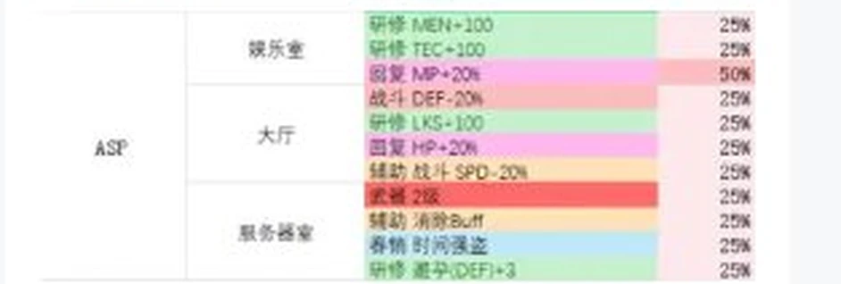
2 惠海路
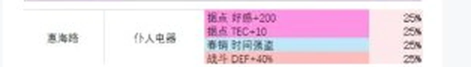
3 仕山医疗所
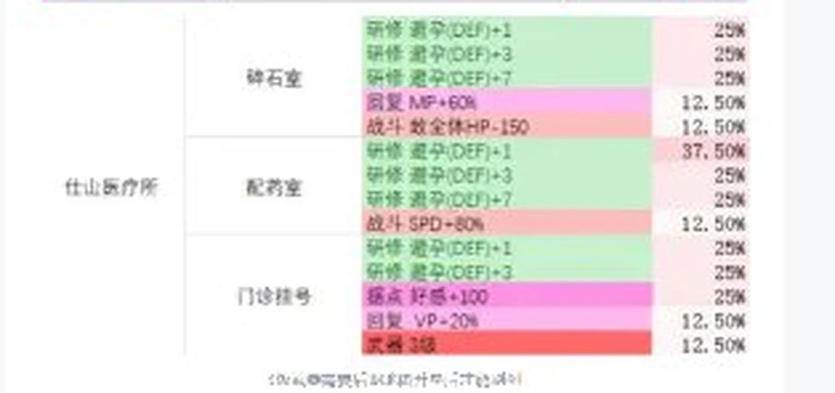
4 产峰工业
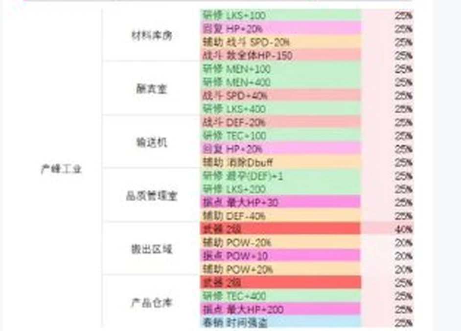
5 美术馆
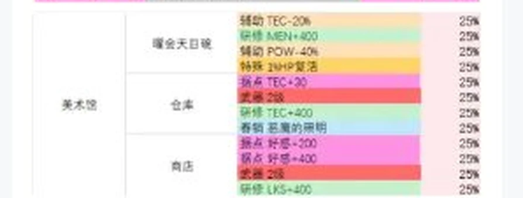
6 芽生宿舍
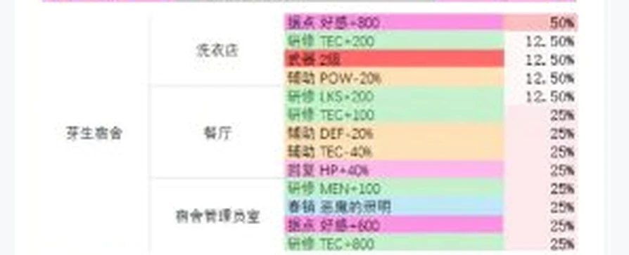
7 化学研究所
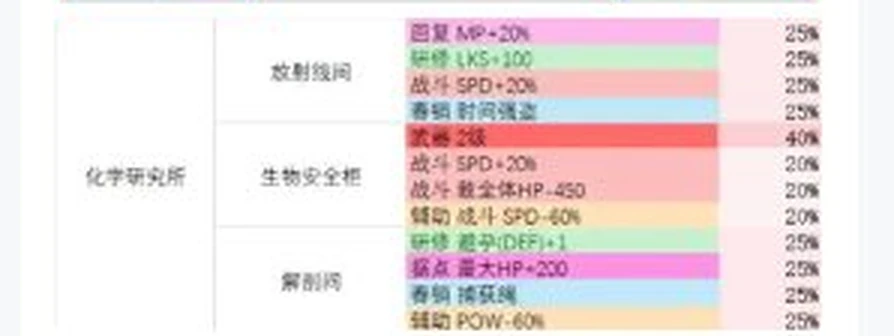
8 东云码头
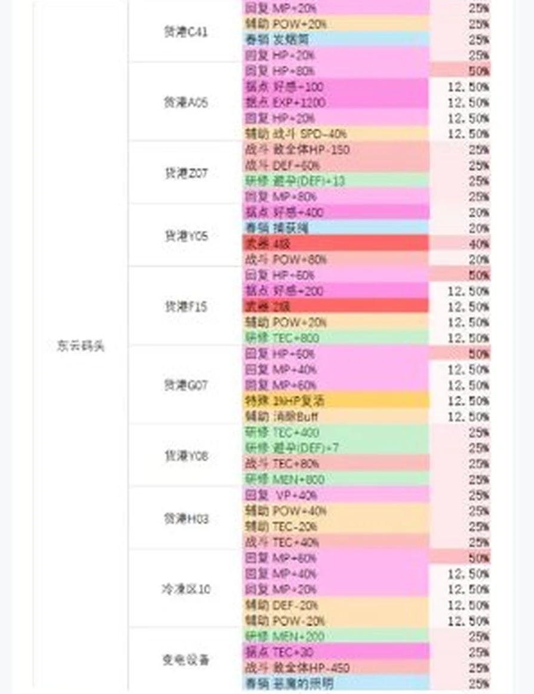
9 YR精废厂
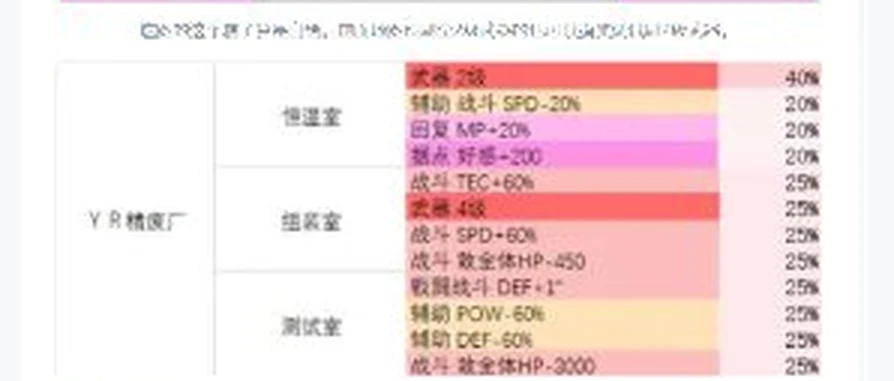
10 亚商城
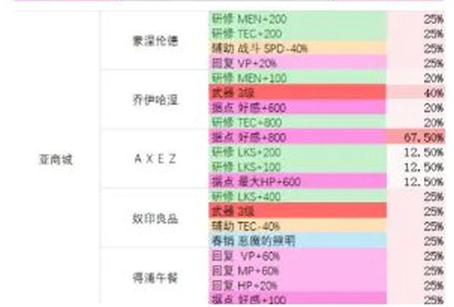
11 信息工学楼
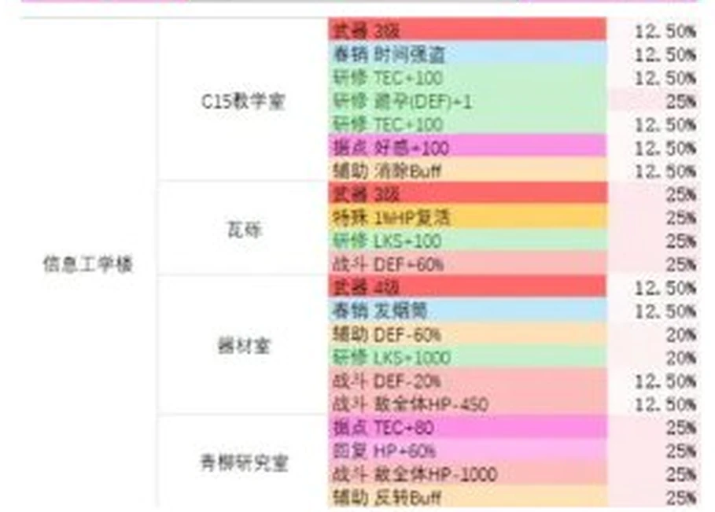
12 后亚地
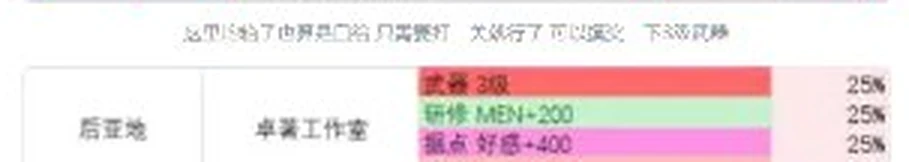
13 造船所
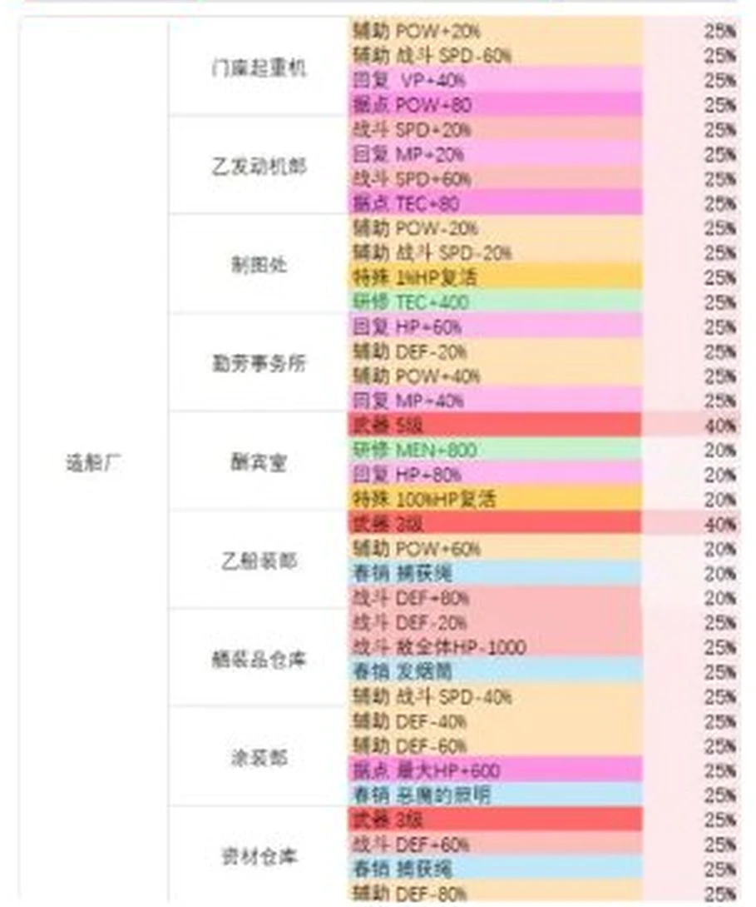
14 第三学校
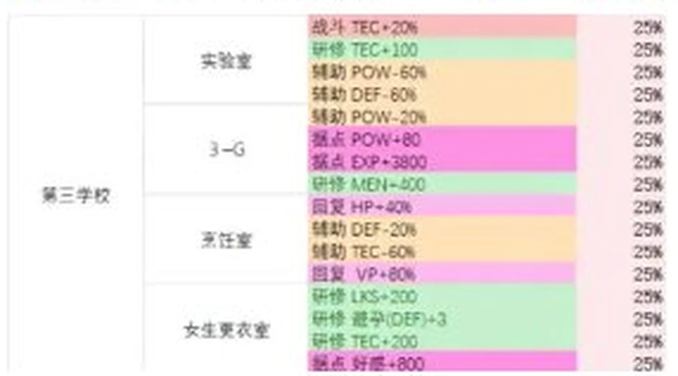
15 产业园区
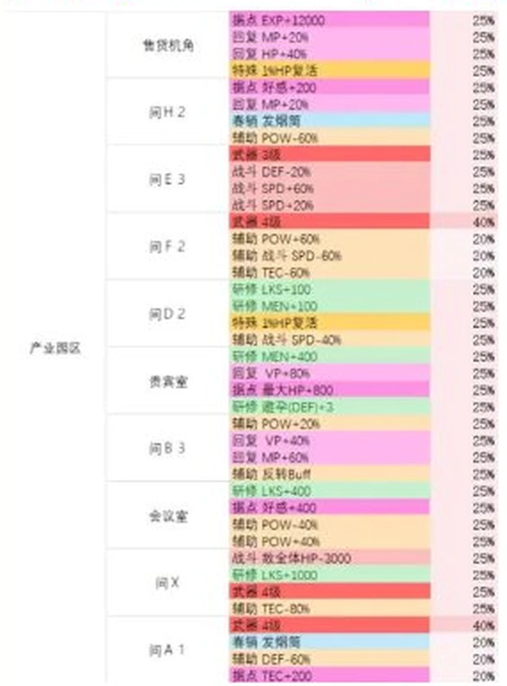
16 花霞祭
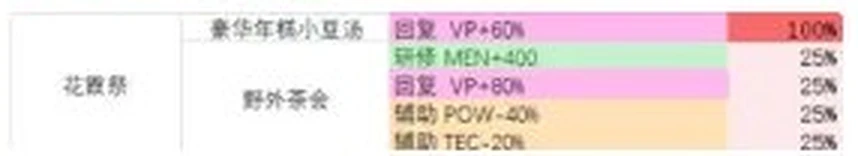
17 昂埃皮克
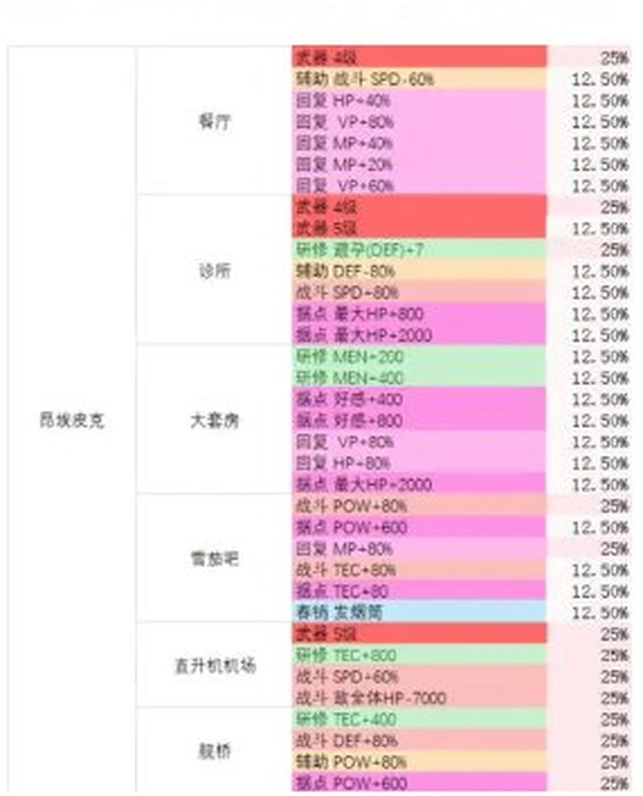
20 灾箭路
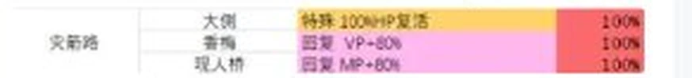
21 总部
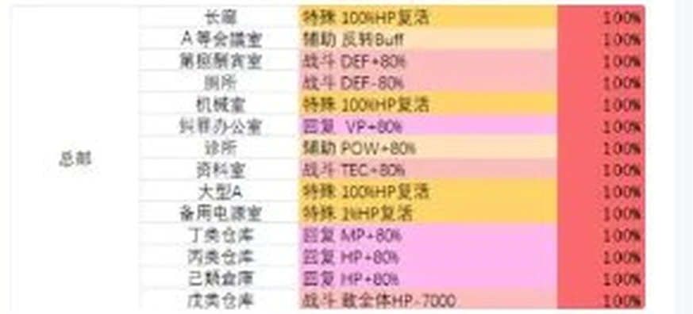
22 URN
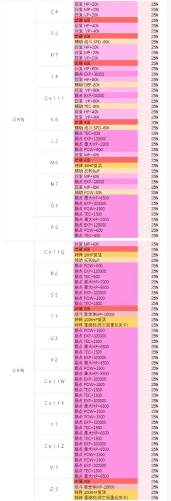
18 中央线与 19 坎坷路是单线贯通的地图，没有掉落表（原帖也未提供）。
资料缺口
- 逐点掉落明细尚未表格化。上面的原表共 400 余行，本站按「不编数据」的原则 先以原图呈现，逐格核对后再转为可筛选的数据表。
- 武器强化所需的素材与金额、据点设施的解锁条件与效果数值，公开来源均只有标题， 暂不提供。
内容出处
原图为百度贴吧「多娜多娜来一起做坏事吧」吧的《多娜多娜中文地图资料大全》， 作者 轰击晨星i，同文发布于逗游网与 OMOBI：
- 逗游网 《多娜多娜中文地图资料大全 全区域路线图+物品掉落表》
- OMOBI 《全地圖掉落表匯總 / 全徽章獲取效果匯總》
- 英文资料 Cyberly — Dohna Dohna Walkthrough & Guide
武器等级速查表按原帖照录（含与原帖逐图表不一致的 3 行，已在备注列标明）； 逐点掉落表以原帖截图按区域切出、3 倍放大后原样呈现，未作任何数值改写。